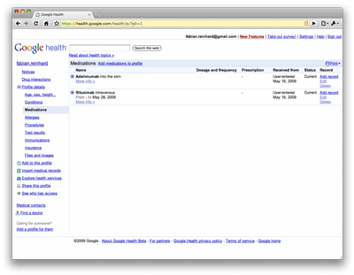
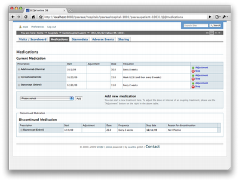
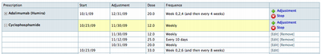
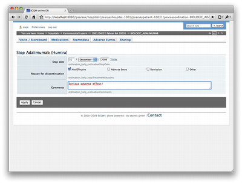
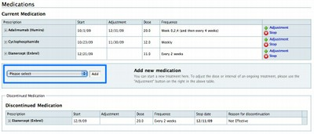
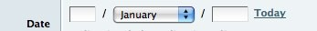

Blog
Cablecom will mehr Geld und ruiniert Backbone
Bislang tauschten Schweizer ISP's untereinander den Datentransfer kostenlos und möglichst direkt aus. Die Cablecom hat nun aber angekündigt, sie werde die kostenfreien Peerings schon bald abschalten. Dies könnte weitreichende Wirkung haben, wie verschiedene Schweizer Providern betonen. Die Servicequalität werde sinken und der Backbone der Cablecom werde kaputt gehen.
Zudem legt die Cablecom eine merkwürdige Verhandlungstaktik an den Tag und läuft Gefahr, mit ihrem fragwürdigen Verhalten Kunden zu verlieren. (Quelle: Infoweek)
Artikel NZZ online:
http://www.nzz.ch/2006/10/27/em/articleELMMC.html
Das Gesicht von Google
Google gilt im Netz mittlerweile als die Institution schlechthin. Zu besonderen Anlässen ändert die beliebteste Website jeweils ihr Aussehen. So zeichnen sich beispielsweise bei Olympischen Spielen die Olympischen Ringe im Google-Logo ab.
Da Google ja mittlerweile Allgemeingut ist, hat auch jeder das Gefühl ein Anrecht auf ein Google-Logo zu seinen Ehren zu haben. Vom Sonderlogo zum Tag des Schmetterlings bis zu einem Heiratsantrag an seine Freundin soll alles vorkommen...
Viele Nutzer schrecken auch nicht davor zurück, Google mit eigenen Vorschlägen zu "beglücken" (Google-Fan- Logos).
http://www.welt.de/webwelt/article798746/Der_Kampf_um_das_Google- Gesicht_.html
Designing a Medication Form
For the online version of the national database of rheumatological diseases we had to design a web form to manage information about tions or more specifically prescriptions of tions. The database is used for l research, therefore consistent data is a key requirement.
The requirements for such a form are:
- Prevent double entries of drugs.
- Give an overview over the on-going tions.
- Show the 'medication history' of a patient.
- The responsible physician might decide to change the dose of a drug during the treatment.
- If a drug isn't effective or even an adverse affect occurs the drug will be stopped and in case of the later the adverse event has to be reported.
- Incorrect or missing data needs to be fixed.
First we took a look at Google Health and their implementation of the medication part. What they basically have is a table with a row for each medication with an 'edit' option for each entry.

That's a good starting point. In our 'medication' tab we show a simular table of the on-going medications. The responsible physician gets a fast overview over the prescribed drugs.

To keep the picture clear we hide the dose adjustments. The adjustments unfold if one clicks on the '+' in the first column of each prescription.

After checking the existing data the doctor can add new drugs, stop current tions or adjust the dose of prescribed medications.
For the edit part we had _in-place editing _in mind but came to the conclusion that it doesn't work here. First, each change of the data needs to be confirmed (e.g., by clicking a 'save' button). And second, viewing and editing the data is not the same and therefore asks for different representations of the data. The application has 'edit' views as shown below.

After stopping a medication it will be moved to the table 'Discontinued medication'.
Starting a new treatment is always in the context of the currently prescribed drugs. Therefore, the panel for adding new tion is placed below the current medication table. With the drop-down we avoid double entries as the options are filtered.

One word about widgets used on forms. We decided not to use any fancy widgets (e.g., a date picker widget). Instead a simple mix between input fields and a drop-down for the month is used. With this "hybrid" date widget we show the date format (dd/mm/yy) without any further explanation and keep data entry simple.

Deutsche Wikipedia soll auf Papier erscheinen
Der deutsche Zenodot Verlag will ab Januar 2007 die deutsche Version von Wikipedia in Buchform herausbringen. Das heisst, die gedruckte Enzyklopädie wäre dann weder frei noch aktuell. Die grössten Vorteile von Wikipedia würden also nicht zum Tragen kommen.
Geplant ist ein Umfang von 100 Bänden mit je 800 Seiten. Kosten soll ein Band 15 Euro. Wen sich die Herausgeber als mögliche Zielgruppe ausgedacht haben, bleibt deshalb mehr als rätselhaft.
Projekt WP 1.0:
http://www.wp10.de
Artikel in Spiegel online:
http://www.spiegel.de/netzwelt/netzkultur/0,1518,397567,00.html
Ein Handy zum Streicheln...
Was ist los wenn ein Saal voller IT-Journalisten ununterbrochen klatscht und in wahre Begeisterungsstürme ausbricht? Sie müssen jedenfalls bei einem geschichtsträchtigen Anlass sein! Richtig: bei der Vorstellung des neuen Apple-Handys, kurz "iPhone".
Sicher hat das Gerät einige schöne Neuerungen und das Design ist auch nicht schlecht. Die Präsentation von Apple-Chef Steve Jobs erinnerte jedoch mehr an die Rede eines Gurus vor seinen Anhängern.
Allzu zynisch möchte ich mich jedoch an dieser Stelle nicht äussern. Die Option mir selber mal ein iPhone anzuschaffen, möchte ich mir ja nicht völlig verbauen...